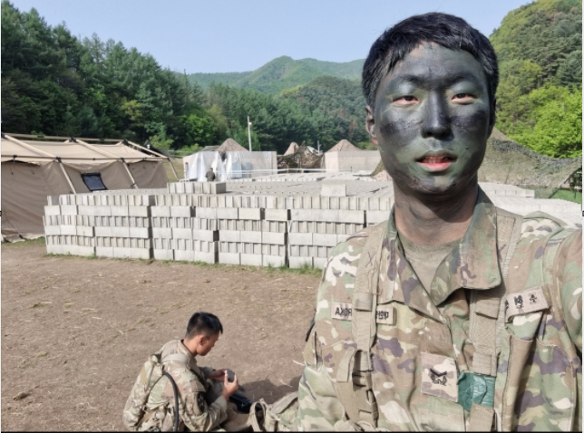

My grandfather was a middle school student when the Korean War broke out. However, driven by his unwavering patriotism, he bravely joined the front lines despite his young age. Out of the 120 student soldiers deployed in his first battle, only two survived—and he was one of them. Immediately after, he was sent into another battle, where he suffered a severe injury, losing his left eye due to an enemy grenade. It was through his sacrifice and dedication that our family exists today, and that South Korea continues to stand strong. Though he lived with only one eye, he devoted himself selflessly to both his country and his family. For that, I extend my deepest gratitude and utmost respect.
Cho's Father
My father served in the Army for 36 months, fulfilling his mandatory military duty. As a drill sergeant responsible for training soldiers, he led an exceptionally demanding and rigorous military life. During his service, he met a fellow soldier whose upright character and disciplined demeanor set him apart from others. Admiring and aspiring to be like him, my father was introduced to Christianity through this fateful encounter. This newfound faith gradually spread to his entire family—his siblings, parents, and eventually, through his marriage within the church, even to me. The influence of that one meaningful connection continues to shape our family to this day.

Cho
I wanted my military service to be meaningful as well. Despite the rough and challenging environment, I always strived to have a positive influence on those around me. I feel somewhat shy and awkard speaking about my own journey, I sincerely hope that the time we spent together remains a cherished memory for them as well.
This photo was taken while participating in the E3B competition, hosted by the U.S. Army. Over the course of three weeks, I learned an incredible amount and dedicated myself to studying in order to earn this badge. However, above all else, I found myself praying to God more than ever. Every night before going to sleep, I prayed earnestly for His guidance in achieving this goal. In the end, I truly believe that His help allowed me to succeed. For all of it, I am deeply grateful.